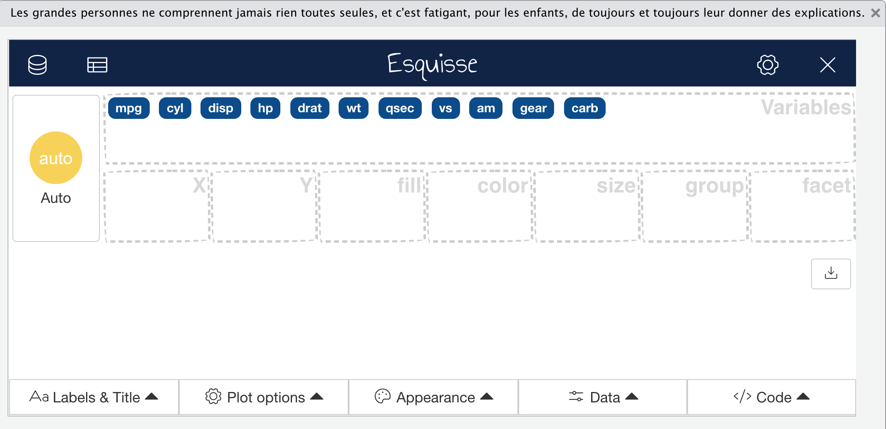
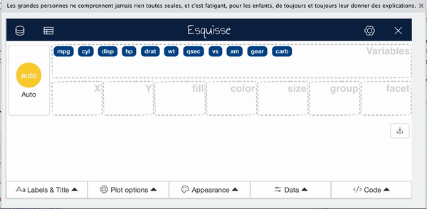
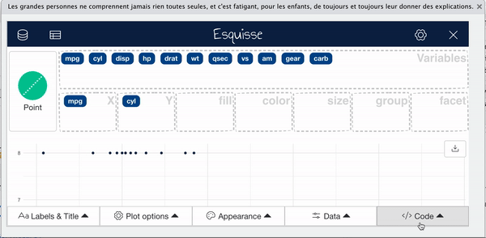
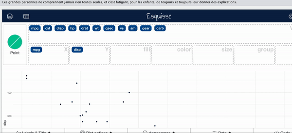
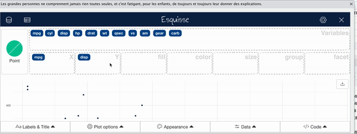
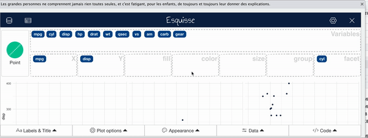
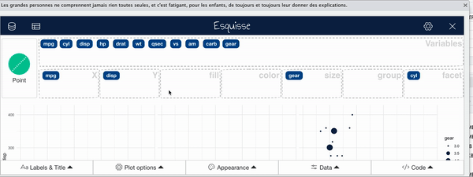
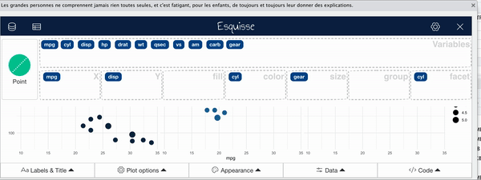
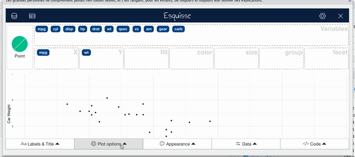
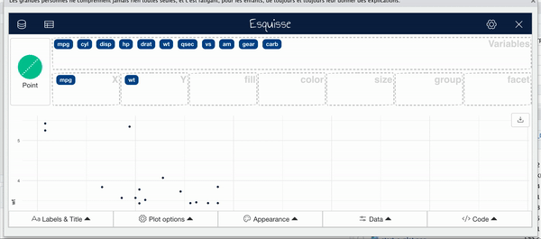

# install.packages("esquisse")
library(esquisse)Warning: package 'esquisse' was built under R version 4.2.2# install.packages("esquisse")
library(esquisse)Warning: package 'esquisse' was built under R version 4.2.2The esquisse package is helpful for getting used to creating plots in R.
It is an interactive tool to help you in RStudio.
It’s super nifty!

Using the esquisser() function you can start creating a plot for a data.frame or tibble. That’s it!
esquisser(mtcars)
To select variables you can drag and drop variables to the respective axis that you would like the variable to be plotted on.

To select variables you can drag and drop variables to the respective axis that you would like the variable to be plotted on.

esquisse automatically assumes a plot type, but you might want to change this.

Facets create multiple plots based on the different values of a variable.

Sometimes it is useful to change the way points are plotted so that size represents a variable. This can especially be helpful if you need your plot to be black and white.

For plots with points use the color region to change coloring according to a variable. (use “fill” for bar plots)

You can change the overall appearance with the appearance tab.

Especially when you have a scatter plot, it can be helpful to add a smooth/trend line.

To change titles on your plot, use the titles tab.

esquisser() function on a dataset💻 Lab